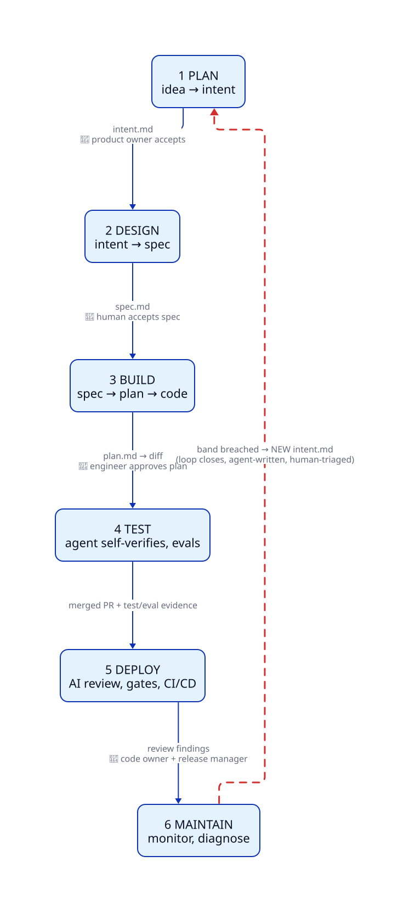
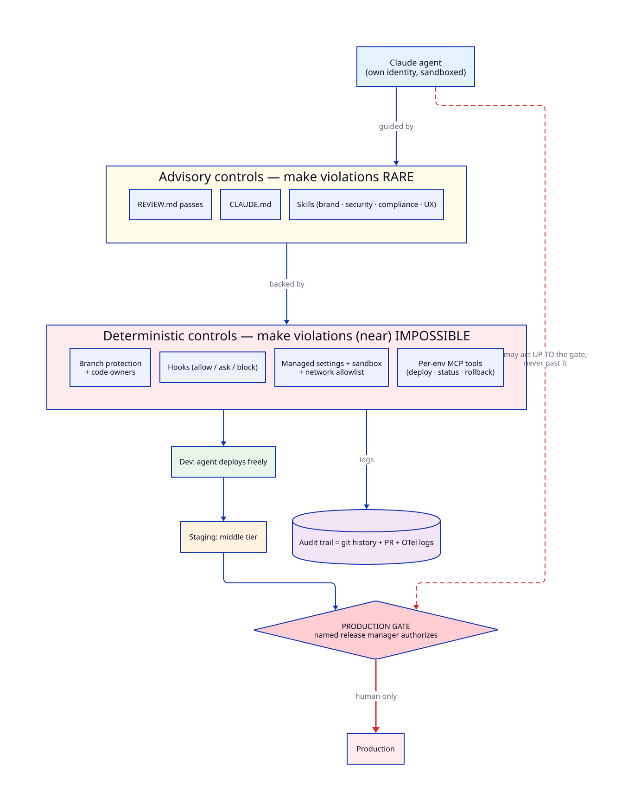
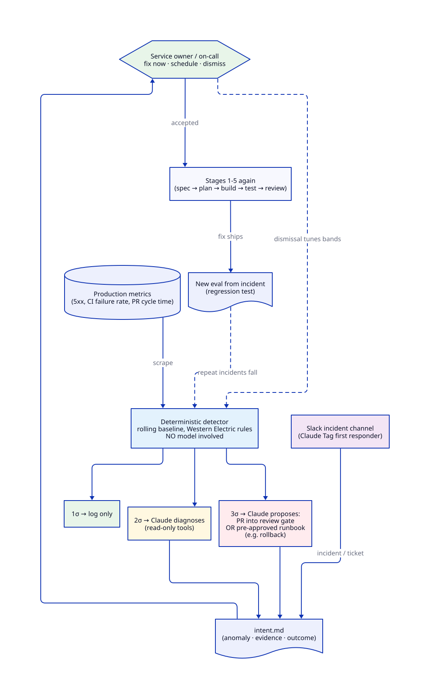

→ PRD at a glance · → Architecture (draft)
The AI-Native SDLC in 5 minutes
Same six stages, same control objectives — but a loop instead of a line, with AI in every stage and humans governing at the gates.
Why change?
1 · The loop

Every stage commits an artifact the next stage reads. The commit chain is the audit trail. Solid arrows: artifact handoff with a human acceptance. Red dashed: production signals re-enter as a new intent.md. full size · source

| Stage | Artifact | Human decision | What the AI does |
|---|---|---|---|
| Plan | intent.md | Product owner accepts | Brainstorms with originator, writes problem/outcome/constraints/open questions |
| Design | spec.md | PO accepts; resolves flagged policy concerns | Writes requirements+design under brand/security/compliance/UX skills |
| Build | plan.md → diff | Engineer approves plan | Plans in read-only plan mode, then implements; parallel sessions + subagents |
| Test | test/build output, evals | Code owner reviews with evidence attached | Verifies its own work in a feedback loop; evals regression-test the agent config |
| Deploy | PR + findings | Code owner approves; release manager authorizes prod | Reviews PRs (REVIEW.md), fixes comments, runs CI/CD, prepares release |
| Maintain | incident record, new intent.md | Service owner triages: fix / schedule / dismiss | Diagnoses breached bands, proposes PR or runbook, writes post-mortem |
2 · Governance: the agent acts up to the gate, never past it

Skills / CLAUDE.md guide; hooks, managed settings, sandbox, branch protection and per-environment MCP tools enforce. Autonomy is tiered: dev free, staging middle, prod human-authorized. full size · source

3 · Closing the loop (Maintain)

Detection is deterministic (rolling baseline, no model). Claude is invoked only after a breach, and the σ tier sets what it may do: 1σ log, 2σ diagnose read-only, 3σ propose a PR or pre-approved runbook. Every incident becomes a permanent eval. full size · source

Building blocks
Measure it
| Idea | Signals (all from git / PR / CI / OTel) |
|---|---|
| Speed | Idea→committed intent; intent→spec; plan→merge; time to first review; breach→intent |
| Quality | First-pass CI success; rework cycles; diff matches plan; defects caught pre-merge vs escaped; eval pass rate |
| Governance | Gate wait time; gate violations reaching prod; review findings citing policy → 0 |
Source: AI-Native SDLC Playbook (Anthropic). Full digest: SDLC_Playbook_Essentials.md.